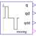

KinematicPTP2Move as fast as possible from start to end position within given kinematic constraints with output signals q, qd=der(q), qdd=der(qd) |

|
Information
This information is part of the Modelica Standard Library maintained by the Modelica Association.
The goal is to move as fast as possible from start position q_begin to end position q_end under given kinematical constraints. The positions can be translational or rotational definitions (i.e., q_begin/q_end is given). In robotics such a movement is called PTP (Point-To-Point). This source block generates the position q(t), the speed qd(t) = der(q), and the acceleration qdd = der(qd) as output. The signals are constructed in such a way that it is not possible to move faster, given the maximally allowed velocity qd_max and the maximally allowed acceleration qdd_max:

If vectors q_begin/q_end have more than 1 element, the output vectors are constructed such that all signals are in the same periods in the acceleration, constant velocity and deceleration phase. This means that only one of the signals is at its limits whereas the others are synchronized in such a way that the end point is reached at the same time instant.
This element is useful to generate a reference signal for a controller which controls, e.g., a drive train, or to drive a flange according to a given acceleration.
Parameters (6)
| q_begin |
Value: {0} Type: Real[:] Description: Start position |
|---|---|
| q_end |
Value: {1} Type: Real[:] Description: End position |
| qd_max |
Value: {1} Type: Real[:] Description: Maximum velocities der(q) |
| qdd_max |
Value: {1} Type: Real[:] Description: Maximum accelerations der(qd) |
| startTime |
Value: 0 Type: Time (s) Description: Time instant at which movement starts |
| nout |
Value: max([size(q_begin, 1); size(q_end, 1); size(qd_max, 1); size(qdd_max, 1)]) Type: Integer Description: Number of output signals (= dimension of q, qd, qdd, moving) |
Outputs (1)
| endTime |
Type: Time (s) Description: Time instant at which movement stops |
|---|
Connectors (4)
| q |
Type: RealOutput[nout] Description: Reference position of path planning |
|
|---|---|---|
| qd |
Type: RealOutput[nout] Description: Reference speed of path planning |
|
| qdd |
Type: RealOutput[nout] Description: Reference acceleration of path planning |
|
| moving |
Type: BooleanOutput[nout] Description: = true, if end position not yet reached; = false, if end position reached or axis is completely at rest |
Used in Examples (5)
|
Modelica.Clocked.Examples.CascadeControlledDrive Drive with continuous-time cascade controller |
|
|
Modelica.Clocked.Examples.CascadeControlledDrive Drive with clocked cascade controller where clocks are defined with sub-sampling and partitions with super-sampling |
|
|
Modelica.Clocked.Examples.CascadeControlledDrive Drive with clocked cascade controller where fastest partition is defined with a clock and slower partition is defined with super-sampling |
|
|
Modelica.Clocked.Examples.CascadeControlledDrive Drive with clocked cascade controller where all partitions are defined with exact (integer) clock that need to be compatible to each other |
|
|
Modelica.Electrical.Machines.Examples.ControlledDCDrives Position controlled DC PM drive with H-bridge from battery |
Used in Components (2)
|
Modelica.Mechanics.MultiBody.Examples.Systems.RobotR3.Utilities Generate reference angles for fastest kinematic movement |
|
|
Modelica.Mechanics.MultiBody.Examples.Systems.RobotR3.Utilities Generate reference angles for fastest kinematic movement |